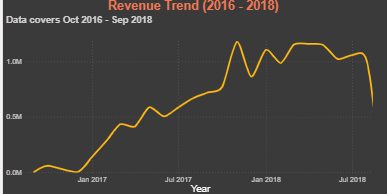
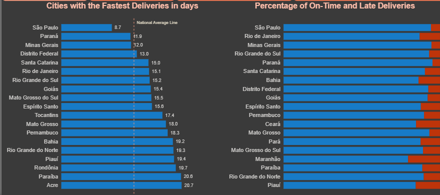
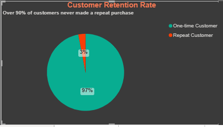

Olist E-Commerce
Analytics
Strong sales. Weak retention. Uneven delivery.
I analysed 100,000+ Brazilian marketplace orders to understand what was actually driving Olist's growth — and what wasn't.
Was Olist's growth translating into a healthy, sustainable customer base?
To answer that, I built an analytical model covering three areas: Revenue — what is driving growth; Operations — where the delivery network is performing well or poorly; and Customers — whether buyers are coming back.
This is a historical, publicly available dataset (Kaggle's Olist Brazilian E-Commerce data, 2016–2018) rather than a live operational engagement — the framing below reflects what the data itself supports, not delivered business consulting.
An analytical pipeline, not analysis on raw CSVs
The resulting model supports analysis across revenue, products, customers, sellers, geography and delivery performance — reusable analytical logic rather than a one-off set of charts.
Growth was real. It was also concentrated.
Revenue grew from almost nothing in late 2016 to more than R$1M per month by 2018, with a pronounced spike around Black Friday in November 2017.
Health & Beauty, Watches & Gifts, and Bed, Bath & Table were among the largest category contributors, while São Paulo alone accounted for more than 40,500 orders — a level of geographic and commercial concentration that a single national growth number hides.
Pareto analysis reinforces the same pattern at the customer level: the top 30% of customers by spend account for roughly 65% of revenue.

92% on-time delivery hides a regional story
At national level, 92.09% of orders were delivered on time — that reads as a strong result until the data is viewed geographically.
São Paulo averaged 8.7 days to deliver, close to the best in the network. The national average sat at 12.5 days. Acre, by contrast, averaged 20.7 days — more than double the national figure and well over twice São Paulo's.
Customers in different parts of Brazil are having meaningfully different experiences with the same marketplace, and the national on-time rate doesn't surface that on its own.

The larger gap wasn't delivery. It was retention.
A cohort retention matrix shows the monthly repeat-purchase rate falling below 1% by the first month after a customer's initial order, and staying low from there — consistent with the ~97% overall non-repeat figure across the dataset.
Olist was successfully generating transactions, but very few customers were returning to generate additional value. For a marketplace, that reframes the priority question from "how do we sell more" to "how do we make the first purchase worth coming back for?"
Worth stating plainly: this dataset doesn't let me test why — whether delivery experience, product category, price, or something else is driving the drop-off. The retention gap is the clearest finding here, not a diagnosed cause.

Reusable analytical logic, not one-off charts
I didn't build the dashboard directly from the source files. I built an analytical model first — a star schema in PostgreSQL — then used 17 SQL queries (CTEs, window functions, cohort and Pareto analysis, query optimisation) to answer increasingly complex business questions, with Power BI as the final reporting layer on top.
Three conclusions, stated carefully
- Protect the growth engine. Revenue is growing, but a relatively small number of categories, regions and customers account for a large share of it — concentration worth monitoring, not just growth worth celebrating.
- Treat delivery as a regional problem. A single national KPI hides meaningful differences in customer experience across states; monitoring by region would surface issues the national average cannot.
- Prioritise retention. The scale of first-time purchasing makes repeat purchase behaviour an important area for further investigation.
These are read-throughs of a historical dataset, not recommendations delivered to Olist. They describe what the numbers show, not a tested intervention.
Boundaries, stated plainly
This is the public Kaggle Olist dataset (2016–2018), not live operational data — patterns here may not reflect Olist's current business.
The dataset doesn't let me test whether delivery speed, price, category, or something else is driving the low repeat-purchase rate — retention is the finding, not the explanation.
The observation window ends in 2018 — customers who might have returned after the dataset's cutoff would still show up as non-repeat here.
What is actually driving the health of the business?
This project turned more than 500,000 raw records across nine datasets into a structured PostgreSQL analytical model and an interactive Power BI reporting layer. But the more important shift was in the question itself — from "how much did Olist sell?" to "what is actually driving the health of the business?"
Revenue growth, delivery performance and customer retention tell three different stories when looked at separately.
Olist was growing. The harder question was whether that growth was durable — and the retention data suggests there was still a significant gap between making the first sale and creating the next one.